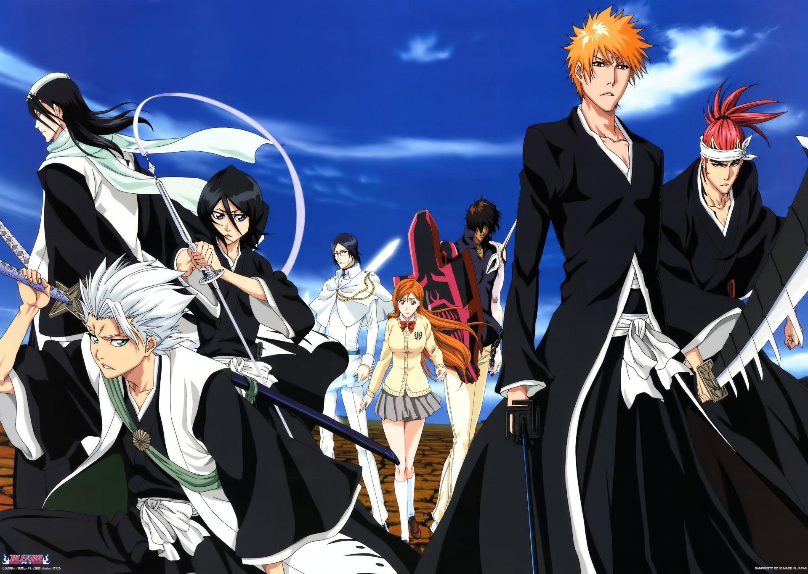

Reviva todos os arcos, personagens e batalhas da emocionante história de Ichigo Kurosaki. Uma jornada pela proteção de Karakura e além.

Escolha uma seção para começar
Os arcos canônicos da história principal de Ichigo Kurosaki.
Arcos exclusivos do anime fora do cânone do mangá.
Shinigami, Hollows, Arrancars, Vizards e muito mais.
Todas as espadas e ressurreições com Shikai e Bankai.